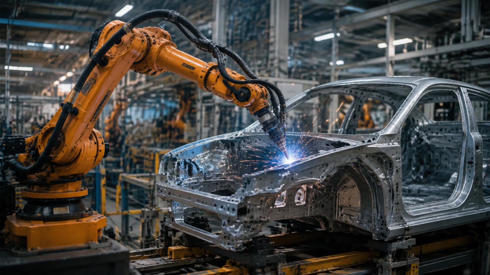
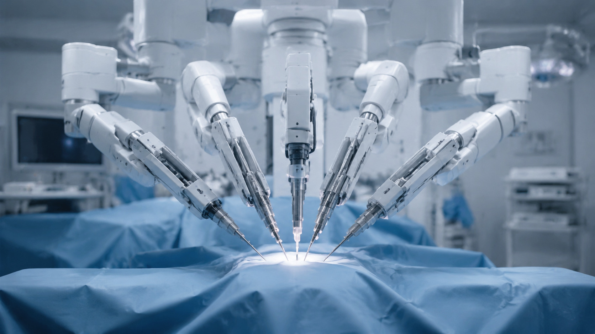
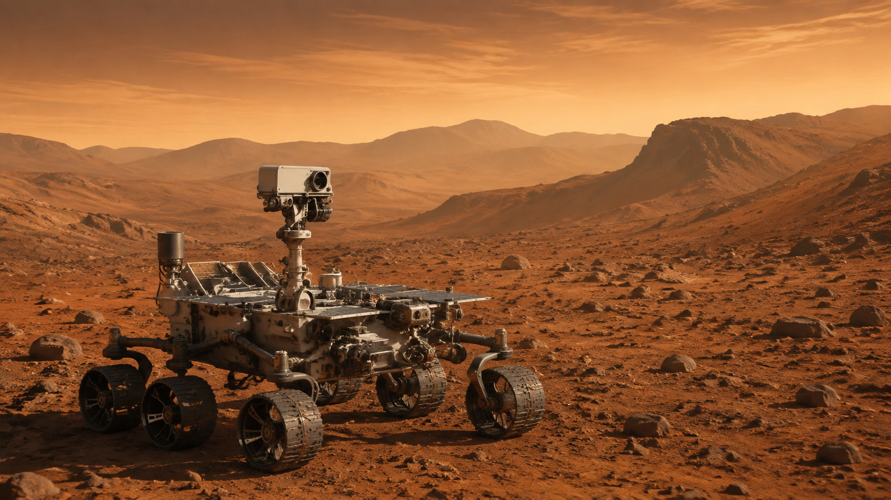
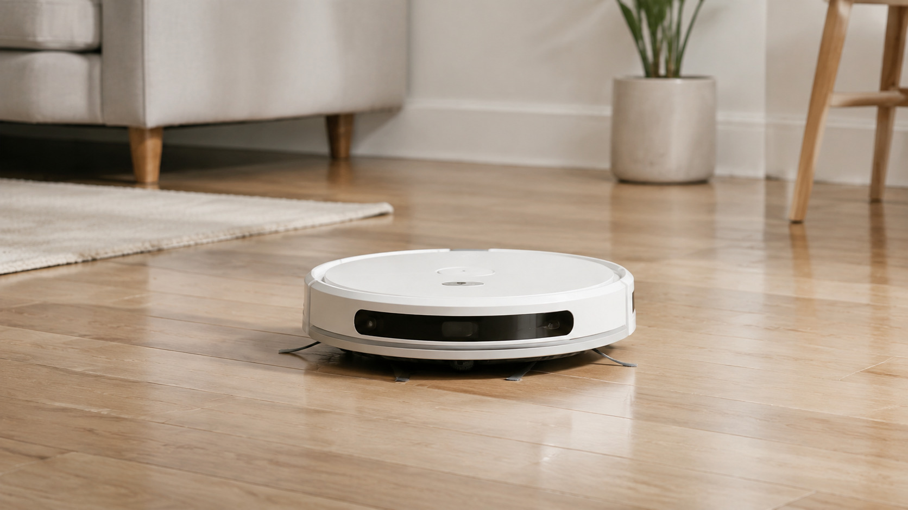

Entrada
Sensores captam luz, som, distância, temperatura ou movimento.
O processo acontece em quatro etapas simples.
Sensores captam luz, som, distância, temperatura ou movimento.
O programa analisa os dados e decide o que deve acontecer.
Motores e atuadores transformam a decisão em movimento.
O sistema verifica o resultado e pode ajustar a próxima ação.
Robô é qualquer máquina
programável que percebe,
decide e age. Sua forma
depende da tarefa.



